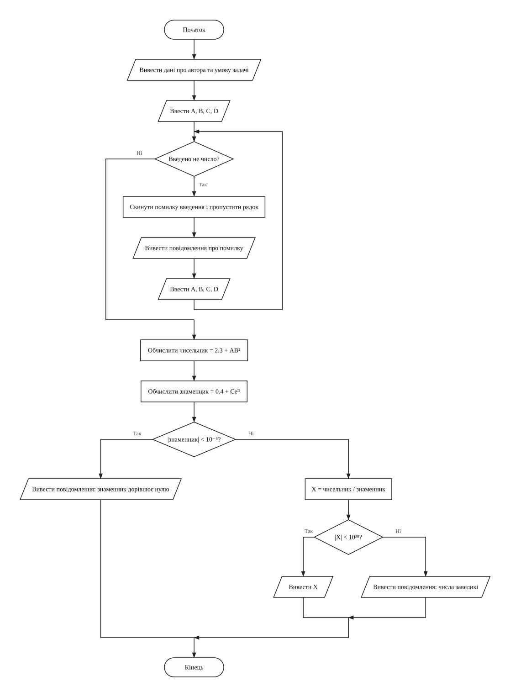
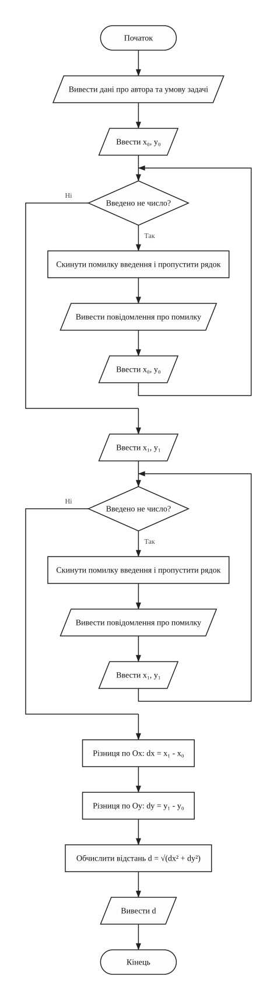
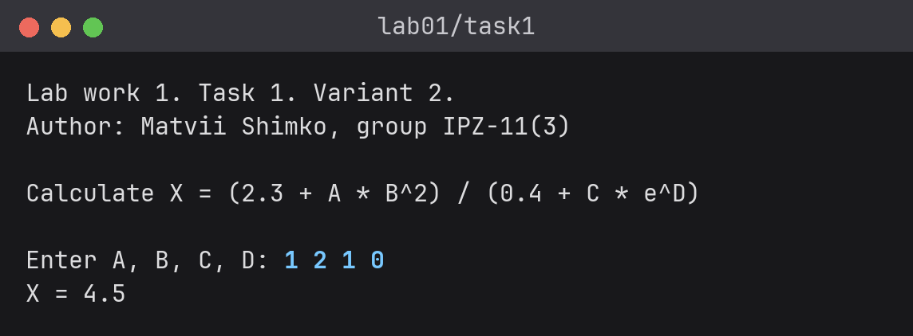
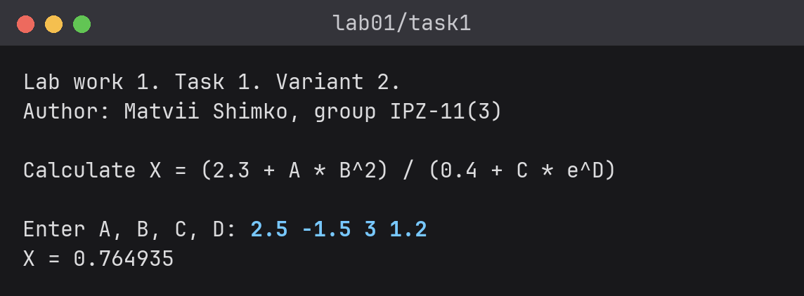
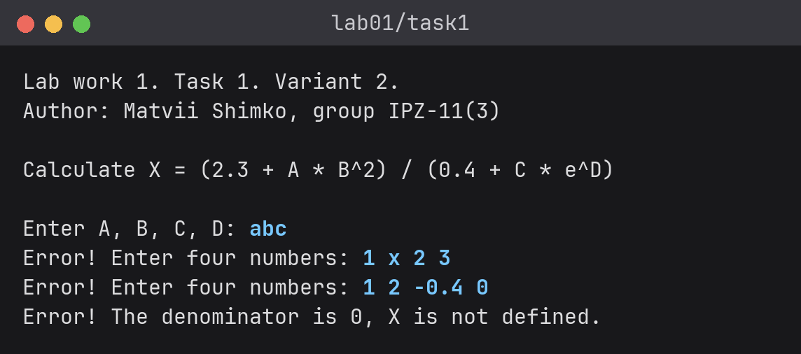
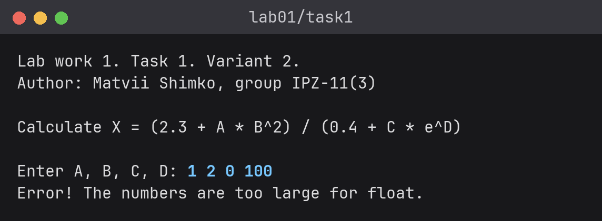
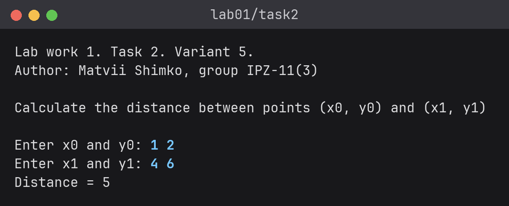
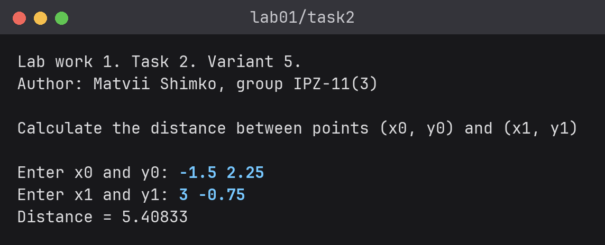
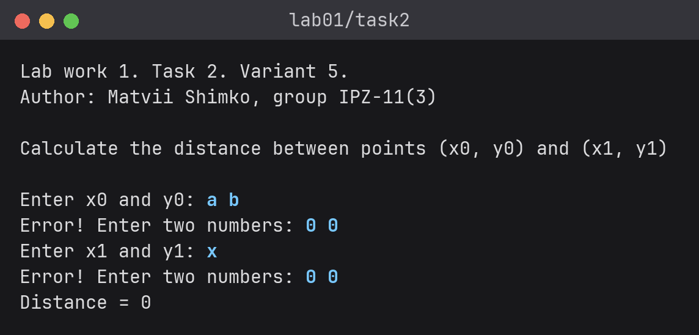
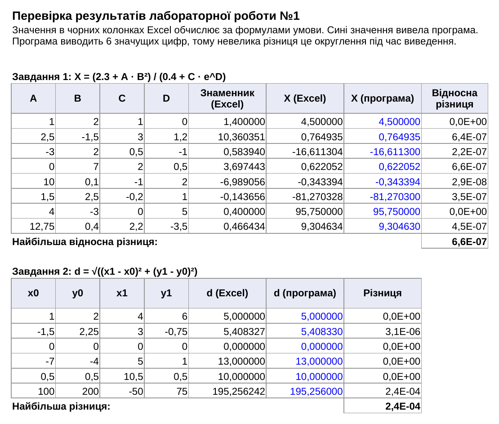

Основи програмування
Звіт до лабораторної роботи №1
Арифметичні вирази та розв'язання математичних задач мовою C++ • Варіанти 2 і 5
Оберіть розділ звіту
Лабораторна робота №1 / 01 з 08
1. Мета роботи
- Вивчити особливості використання вбудованих типів даних: char, int, long, short, float, double, unsigned char, unsigned int, unsigned long.
- Вивчити особливості використання функцій введення - виведення.
- Навчитися застосовувати стандартні математичні функції.
Лабораторна робота №1 / 02 з 08
2. Умови задач
Завдання 1 - варіант 2
Варіант 2 (у таблиці 28 варіантів, 30 - 28 = 2).
За даними, що введені з клавіатури в оперативну пам'ять, визначити значення виразу, використовуючи математичні функції, і вивести результат на екран. Довільні значення змінних A, B, C, D ввести з клавіатури.
Завдання 2 - варіант 5
Варіант 5 (у таблиці 25 варіантів, 30 - 25 = 5).
Написати програму, що розв'язує задачу з математики шкільного курсу: обчислити відстань від точки (x0, y0) до точки (x1, y1), значення координат яких введені з клавіатури.
Лабораторна робота №1 / 03 з 08
3. Аналіз задач
Завдання 1 - варіант 2
Для розв'язання задачі потрібно ввести чотири дійсні числа A, B, C, D (тип
float). Вони вводяться одним рядком. Вираз рахується частинами: спочатку чисельник
2.3 + AB2, потім знаменник 0.4 + CeD, а тоді їх частка. Квадрат B рахується
множенням, а експонента функцією exp з бібліотеки cmath.
Якщо введено не число, cin.fail() показує помилку, cin.clear() її
скидає, а cin.ignore() пропускає неправильний рядок. Після цього чотири значення
вводяться знову.
Перед діленням необхідно переконатися, що знаменник не дорівнює нулю. Дробові числа зберігаються наближено, тому знаменник вважається нулем, якщо
його модуль менший за 10-6. Тоді виводиться повідомлення, а X не рахується. Окреме
повідомлення виводиться, якщо значення X не вміщується у float.
Завдання 2 - варіант 5
Різниці координат по осях Ox і Oy є катетами прямокутного трикутника, а відстань між точками є його гіпотенузою. За теоремою Піфагора отримуємо формулу:
Програма рахує різниці координат. Для квадрата використовую множення, а для кореня
функцію sqrt. Координати дійсні (float), кожна пара вводиться окремо, а
неправильне введення обробляється так само, як у завданні 1.
Структура програм
Функції в цій роботі ще не вивчалися, тому кожна програма складається лише з функції
main.
Таблиця 1 - Функції програм
| Файл | Функція | Призначення |
|---|---|---|
task1.cpp | main | введення A, B, C, D з перевіркою, обчислення і виведення X |
task2.cpp | main | введення координат двох точок з перевіркою, обчислення і виведення відстані |
Джерела: Ковалюк Т.В. Алгоритмізація та програмування, 2024; Ковалюк Т.В., Петрівський В.Я. Гарний стиль програмування мовами C, C++, C#, 2025.
Лабораторна робота №1 / 04 з 08
4. Блок-схеми алгоритмів
Завдання 1 - варіант 2


main (головна функція: обчислення виразу X)Завдання 2 - варіант 5


main (головна функція: обчислення відстані між точками)Лабораторна робота №1 / 05 з 08
5. Тексти програм
Завдання 1 - варіант 2
Файл task1.cpp
/////////////////////////////////////////////////////////////////////
// Ім'я файлу: task1.cpp
// Автор: Шимко Матвій, гр. ІПЗ-11(3)
// Номер версії модуля: version 2
// Запланована ціль: лабораторна робота №1, завдання 1, варіант 2.
// Обчислити значення виразу
// X = (2.3 + AB^2) / (0.4 + Ce^D).
/////////////////////////////////////////////////////////////////////
#include <cmath>
#include <iostream>
using namespace std;
//=========== константи
const float NUMERATOR_TERM = 2.3f; // доданок у чисельнику
const float DENOMINATOR_TERM = 0.4f; // доданок у знаменнику
const float ZERO_LIMIT = 0.000001f; // менший за це модуль вважається нулем
const float MAX_VALUE = 1e38f; // межа значень типу float
//=========== глобальні змінні
float a = 0; // значення A
float b = 0; // значення B
float c = 0; // значення C
float d = 0; // значення D
float numerator = 0; // чисельник виразу
float denominator = 0; // знаменник виразу
float result = 0; // значення X
/*
* Функція вводить A, B, C, D, перевіряє знаменник на нуль
* і виводить значення виразу X
* Параметри: немає
* Значення, що повертаються: 0
*/
int main()
{
cout << "Lab work 1. Task 1. Variant 2." << endl;
cout << "Author: Matvii Shimko, group IPZ-11(3)" << endl << endl;
cout << "Calculate X = (2.3 + A * B^2) / (0.4 + C * e^D)" << endl << endl;
cout << "Enter A, B, C, D: ";
cin >> a >> b >> c >> d;
while (cin.fail())
{
cin.clear(); // скинути помилку введення
cin.ignore(1000, '\n'); // і пропустити неправильний рядок
cout << "Error! Enter four numbers: ";
cin >> a >> b >> c >> d;
}
numerator = NUMERATOR_TERM + a * b * b;
denominator = DENOMINATOR_TERM + c * exp(d);
if (fabs(denominator) < ZERO_LIMIT)
{
cout << "Error! The denominator is 0, X is not defined." << endl;
}
else
{
result = numerator / denominator;
// якщо значення не вмістилось у float, ця умова хибна
if (fabs(result) < MAX_VALUE)
{
cout << "X = " << result << endl;
}
else
{
cout << "Error! The numbers are too large for float." << endl;
}
}
return 0;
}
Завдання 2 - варіант 5
Файл task2.cpp
/////////////////////////////////////////////////////////////////////
// Ім'я файлу: task2.cpp
// Автор: Шимко Матвій, гр. ІПЗ-11(3)
// Номер версії модуля: version 2
// Запланована ціль: лабораторна робота №1, завдання 2, варіант 5.
// Обчислити відстань між двома точками площини.
/////////////////////////////////////////////////////////////////////
#include <cmath>
#include <iostream>
using namespace std;
//=========== глобальні змінні
float firstX = 0; // координата x0 першої точки
float firstY = 0; // координата y0 першої точки
float secondX = 0; // координата x1 другої точки
float secondY = 0; // координата y1 другої точки
float differenceX = 0; // різниця координат по осі Ox
float differenceY = 0; // різниця координат по осі Oy
float length = 0; // відстань між точками
/*
* Функція вводить координати двох точок і виводить відстань між ними
* Параметри: немає
* Значення, що повертаються: 0
*/
int main()
{
cout << "Lab work 1. Task 2. Variant 5." << endl;
cout << "Author: Matvii Shimko, group IPZ-11(3)" << endl << endl;
cout << "Calculate the distance between points (x0, y0) and (x1, y1)"
<< endl
<< endl;
cout << "Enter x0 and y0: ";
cin >> firstX >> firstY;
while (cin.fail())
{
cin.clear(); // скинути помилку введення
cin.ignore(1000, '\n'); // і пропустити неправильний рядок
cout << "Error! Enter two numbers: ";
cin >> firstX >> firstY;
}
cout << "Enter x1 and y1: ";
cin >> secondX >> secondY;
while (cin.fail())
{
cin.clear();
cin.ignore(1000, '\n');
cout << "Error! Enter two numbers: ";
cin >> secondX >> secondY;
}
differenceX = secondX - firstX;
differenceY = secondY - firstY;
length = sqrt(differenceX * differenceX + differenceY * differenceY);
cout << "Distance = " << length << endl;
return 0;
}
Лабораторна робота №1 / 06 з 08
6. Результати виконання роботи
Завдання 1 - варіант 2








Завдання 2 - варіант 5






Лабораторна робота №1 / 07 з 08
7. Аналіз достовірності результатів
Перевірка в Excel
Результати обох програм перевірено в Excel (файл
check.xlsx). Формули записано в клітинки за умовою задачі, через
функції EXP і SQRT. Поруч стоять значення, які вивела програма для тих
самих вхідних даних.


- завдання 1: 8 наборів даних, найбільша відносна різниця 6.6 · 10-7;
- завдання 2: 6 наборів даних, найбільша різниця 2.4 · 10-4 при відстані 195.256.
Такі різниці дає округлення: програма виводить 6 значущих цифр, а Excel показує більше.
Ручна перевірка
Для завдання 1 візьмемо A = 1, B = 2, C = 1, D = 0:
Тепер дробові значення A = 2.5, B = -1.5, C = 3, D = 1.2:
Для завдання 2 візьмемо точки (1, 2) і (4, 6):
І точки з дробовими координатами (-1.5, 2.25) і (3, -0.75):
Ці приклади та випадки з помилками зібрано в таблиці.
Таблиця 2 - Контрольні випадки
| Вхідні дані | Очікуваний результат | Результат програми |
|---|---|---|
| A = 1, B = 2, C = 1, D = 0 | X = 4.5 | X = 4.5 |
| A = 2.5, B = -1.5, C = 3, D = 1.2 | X ≈ 0.764935 | X = 0.764935 |
| A = 1, B = 2, C = -0.4, D = 0 | знаменник 0.4 - 0.4 = 0, X не існує | повідомлення про нульовий знаменник |
| A = 1, B = 2, C = 0, D = 100 | e100 не вміщується у
float | повідомлення про завеликі числа |
| abc; 1 x 2 3 | повторне введення | Error! Enter four numbers |
| (1, 2) і (4, 6) | d = 5 | Distance = 5 |
| (-1.5, 2.25) і (3, -0.75) | d ≈ 5.40833 | Distance = 5.40833 |
| (0, 0) і (0, 0) | d = 0 | Distance = 0 |
| a b; x | повторне введення | Error! Enter two numbers |
Лабораторна робота №1 / 08 з 08
8. Висновки
У ході лабораторної роботи розроблено дві програми мовою C++. Перша обчислює заданий вираз за
допомогою функції exp, друга знаходить відстань між двома точками за теоремою Піфагора
за допомогою sqrt. Обидві просять повторити введення, якщо введено не число. Виконано
перевірку в Excel і вручну, значення збігаються. У першій програмі довелося окремо врахувати нульовий
знаменник і значення, яке не вміщується у float.